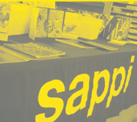
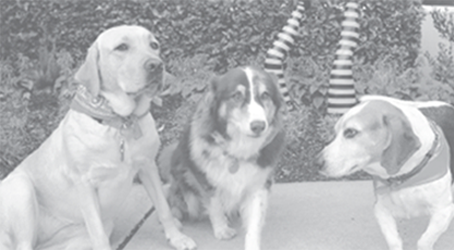
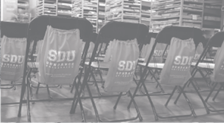

<!--
    Juan Perez
    SunDance USA
    10/24/2016
!-->

<html lang="en">
  <head>
    <meta charset="utf-8">
    <meta http-equiv="X-UA-Compatible" content="IE=edge">
    <meta name="viewport" content="width=device-width, initial-scale=1">
    <meta name="description" content="SunDance University Follow up">
    <meta name="author" content="Juan Perez">
    <link rel="icon" href="../../favicon.ico">

    <title>SunDance SDU</title>

    <!-- Bootstrap core CSS -->
    <link href="css/bootstrap.css" rel="stylesheet">

    <!-- Custom styles for this template -->
    <link href="css/style.css" rel="stylesheet">

  </head>

  <body>
  <div class="jumbotron">
          <div class="container  text-center">
                <div class="row">
                        <div class="col-md-6 move img-responsive">
                            
                            
                        </div>
                        <div class="col-md-6">           
                            <span class="title" >AND WINS WITH A <b>10.6</b>%<br> </span><span class="title">DIRECT RESPONSE RATE!</span>
                        </div>
                </div>
          </div>
  </div>
            <div class="row">
                <div class="teal"></div>
                <div class="yellow"></div>
                <div class="green"></div>
    </div>

    <div class="wrap">
            <div class="row">
                <div class="col-md-6">
                
                    <div class="left">
                        <div class="row">
                                <div class="col-md-4">
                                        
                                </div>
                                <div class="col-md-8">
                                        
                                </div>
                        </div>
                        <div class="row bottom-pad">
                                <div class="teal-box col-md-4">
                                        <span>“Just as he told us: I got an email on this event and didn’t respond till I got the printed package in the mail.”</span>
                                </div>
                                <div class="green-box col-md-8">
                                        <span>“Very insightful,. Looking forward to the next one!”<br><br>“It was like DESIGN porn.”</span>
                                </div>
                        </div>
                        <div class="row">
                                <div class="col-md-8 ">
                                        
                                </div>
                                <div class="col-md-4">
                                        
                                </div>
                        </div>
                    </div></div>
                <div class="col-md-6 right">
                        <div class="grey-box">
                        <h2"><i>Building Brighter Businesses</i></h2>
                        <p><span class="black">SUNDANCE launches SunDance University with a bang! </span></p>
                        <p>SDU is committed to bringing quality educational content on a variety of subjects. The goal is to provide clients with insights, ideas and inspiration to help drive their business to the next level. Topics will range from Marketing, Design, Printing (offset and digital), large format, fulfillment and integrating storefronts as an enterprise solution. </p>
                        <p><span class="black">
                            Thursday, October 13, SDU hosted Daniel Dejan, North American Print/Creative Manager for Sappi, for two classes:</span></p>
                        <p>
                        Haptic Brain/Haptic Brand and Special Effects and Finishing Techniques. Overall SDU achieved a 10.6% response rate on the multi-channel campaign and secured a 53% conversion rate with nearly 70 attendees. Post event survey revealed attendees were delighted with the content and Daniel’s presentations.
                        </p>
                        </div>
                        <div class="teal-box2">
                           <h2> Classes Resume Spring 2017 </h2>
                            <span id="check">Check back for more information soon!</span>
                        </div>
                </div>
            
    </div></div>
    <div class="text-center">
    <a href="http://www.sundanceusa.com"></a>
    <p><small><i>© Copyright 2016 - SunDance<br>
9564 Delegates Dr., Building A, Orlando, FL 32837</i></small></p>
    </div>


<
    